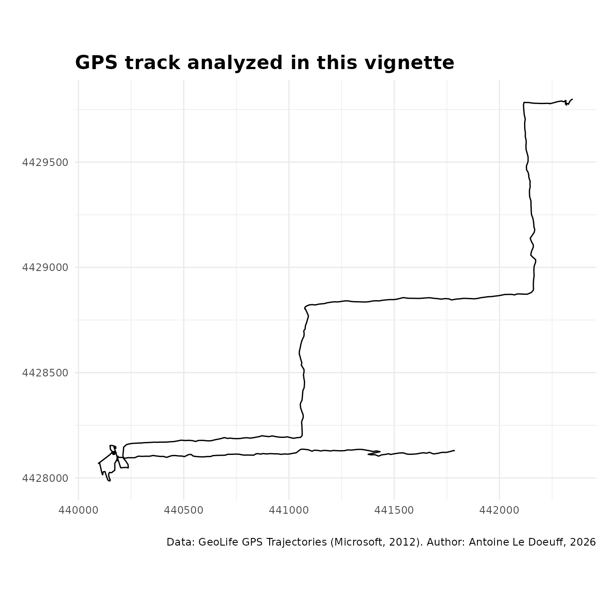
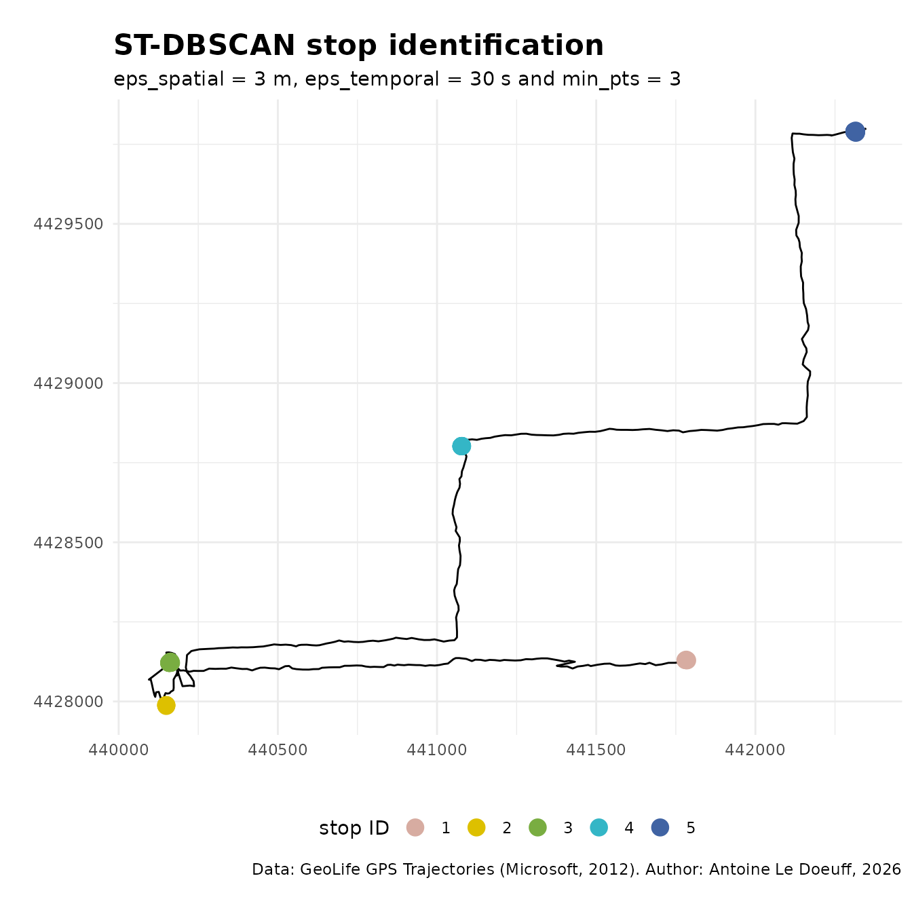

Stop identification with ST-DBSCAN
Source:vignettes/stop-identification.Rmd
stop-identification.RmdPresentation
This vignette briefly demonstrates how to perform stop identification in a GPS track using ST-DBSCAN, which is a classic application of this algorithm.
Dataset
The GeoLife GPS Trajectories dataset is used for this demonstration. The GPS trajectories are located in Beijing. We previously converted the pings to a metric coordinate reference system (EPSG:4586) and selected only the relevant variables.
head(geolife_traj)
#> date time x y
#> 1 2008-10-23 02:53:04 441782.8 4428131
#> 2 2008-10-23 02:53:10 441785.6 4428129
#> 3 2008-10-23 02:53:15 441782.8 4428129
#> 4 2008-10-23 02:53:20 441780.1 4428130
#> 5 2008-10-23 02:53:25 441769.6 4428126
#> 6 2008-10-23 02:53:30 441749.3 4428121
# Copy source data
dt <- geolife_traj
ggplot() +
geom_path(data = dt, aes(x, y)) +
labs(x = "", y = "",
title = "GPS track analyzed in this vignette",
caption = "Data: GeoLife GPS Trajectories (Microsoft, 2012). Author: Antoine Le Doeuff, 2026",
) +
coord_equal() +
theme_minimal() +
theme(plot.title = element_text(size = 16, face = "bold"))
Preprocessing
For stdbscan to work, the time variable must be numeric.
We therefore convert it to seconds since the beginning of the track.
dt$date_time <- as_datetime(paste(dt$date, dt$time), tz = "GMT")
dt$t <- as.numeric(dt$date_time - min(dt$date_time))Run ST-DBSCAN
We can then run ST-DBSCAN using st_dbscan(). We set a
spatial neighborhood of 3 meters, a temporal neighborhood of 30 seconds,
and require a minimum of 3 pings to form a cluster. Note that these
parameters are used only for demonstration purposes; in practice, a grid
search (or similar tuning strategy) should be used to determine optimal
values.
Check result
We can check the number of pings in each cluster using
table().
table(dt$clust)
#>
#> -1 1 2 3 4 5
#> 420 4 5 12 12 15Clusters can be plotted directly using ggplot2 :
# Extract stops and movements
dt_mvt <- dt[dt$clust == "-1", ]
dt_stop <- dt[dt$clust != "-1", ]
# Plot
ggplot() +
geom_path(data = dt_mvt, aes(x, y)) +
geom_point(data = dt_stop, aes(x, y, color = clust), size = 4) +
labs(x = "", y = "", color = "stop ID",
title = "ST-DBSCAN stop identification",
subtitle = "eps_spatial = 3 m, eps_temporal = 30 s and min_pts = 3",
caption = "Data: GeoLife GPS Trajectories (Microsoft, 2012). Author: Antoine Le Doeuff, 2026",
) +
scale_color_manual(values = MetBrewer::met.brewer("Isfahan2", 5)) +
coord_equal() +
theme_minimal() +
theme(
legend.position = "bottom",
plot.title = element_text(size = 16, face = "bold"),
)
Clusters can be visualized in 3D using plotly :
# Zoom on stop 4
dt_f <- dt[dt$x > 441060 & dt$x < 441100, ]
dt_f <- dt_f[dt_f$y > 4428780 & dt_f$y < 4428820, ]
# Extract stop
dt_f_stop <- dt_f[dt_f$clust != "-1", ]
# Plotly figure
fig <- plot_ly(
data = dt_f,
x = ~x,
y = ~y,
z = ~t,
type = "scatter3d", mode = "lines+markers",
line = list(width = 4, color = "grey"),
marker = list(size = 3, color = "grey")
)
fig |>
add_markers(
x = ~dt_f_stop$x,
y = ~dt_f_stop$y,
z = ~dt_f_stop$t,
marker = list(size = 4, color = 'red'),
name = 'Stop'
) |>
layout(
scene = list(
xaxis = list(title = "x"),
yaxis = list(title = "y"),
zaxis = list(title = "t")
)
)